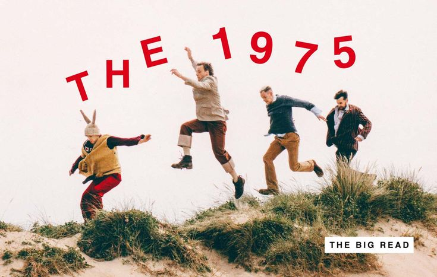

The 1975 are an English pop rock band formed in the year 2002 at Wilmslow High School. Who are based in Manchester at the moment.The band consists of lead vocalist, producer, lyricist and rhythm guitarist Matty Healy, lead guitarist Adam Hann, bassist Ross MacDonald, and drummer/producer George Daniel.
The 1975 are an English pop rock band formed in the year 2002 at Wilmslow High School. Who are based in Manchester at the moment.The band consists of lead vocalist, producer, lyricist and rhythm guitarist Matty Healy, lead guitarist Adam Hann, bassist Ross MacDonald, and drummer/producer George Daniel.
The origins of the band go back to attending high school and playing together as teenagers. Concerts organized by a city council led the band to sign with Dirty Hit and Polydor Records. The band opened up to several major acts and released a series of expanded pieces (Facedown, Sex, Music for Cars, IV) over the course of 2012 before releasing their self-titled debut album (2013), which featured the popular singles "Sex" , "Chocolate" and "Thieves", and peaked at number one in the UK.
Their second album, I Like It When You Sleep, for You Are So Beautiful yet So Unaware of It (2016), reached No. 1 in the US, UK, Canada, Australia and New Zealand. Following the touring cycle for the record, the band announced their third album under the working title Music for Cars, before taking another hiatus in 2017.

Returning in 2018, the band announced that the album had evolved into their third campaign cycle, consisting of their third and fourth studio albums. The first, A Brief Inquiry into Online Relationships (2018), was released to widespread critical acclaim, and became their third No. 1 album in the UK. The second, Notes on a Conditional Form, was released in May 2020 and became their fourth consecutive No. 1 album in the UK.
The 1975 has garnered acclaim for their relevant lyricism and exploration of an eclectic range of genres such as pop rock, synth-pop, R&B, electropop, new wave forms of electronic music (such as UK garage, 2-step and ambient), and forms of rock music (such as shoegaze, post-punk and post-rock), as well as elements of jazz, soul and gospel.
On 24 July 2019, the opening song of Notes on a Conditional Form, titled "The 1975", was released, featuring climate activist Greta Thunberg, the proceeds of the song going to Extinction Rebellion.
 The lead single, entitled "People" released on 22 August 2019. This was announced by a countdown on the band's social media accounts, including small snippets of lyrics from the song that fans could piece together. A second single, titled "Frail State of Mind", was released on 24 October. The music video for the song was released on 30 November 2019. The next single, "Me & You Together Song", was released on 16 January 2020.On 15 February, the group did their UK tour that lasted until 3 March 2020.
The lead single, entitled "People" released on 22 August 2019. This was announced by a countdown on the band's social media accounts, including small snippets of lyrics from the song that fans could piece together. A second single, titled "Frail State of Mind", was released on 24 October. The music video for the song was released on 30 November 2019. The next single, "Me & You Together Song", was released on 16 January 2020.On 15 February, the group did their UK tour that lasted until 3 March 2020.
The tour began in Nottingham’s Motor point arena, which holds a capacity of 10,000, and they ended their tour in Dublin after performing in Places such as London’s O2, Manchester, Glasgow and other hit places in the UK. On 17 February 2020, the band put up a "digital detox" website called MindShowerAI which contained a countdown to their next single as well as several odd messages like “I am doing my mind and my life!” and “I feel comfort and respect." A fourth single, ‘The Birthday Party’, was released on 19 February 2020 at the end of the website's countdown. On 3 April, the band released "Jesus Christ 2005 God Bless America", featuring guest vocals from Phoebe Bridgers, which was followed by "If You're Too Shy (Let Me Know)" on 23 April 2020.
The band's fourth album, Notes on a Conditional Form, was released on 22 May 2020. It became the band's fourth consecutive album to reach number one on the UK Albums Chart as well as reaching number one in Australia and number four in the United States. On 4 December 2020, the album became certified silver in the UK via Brits certified.
Information from Wikipedia.